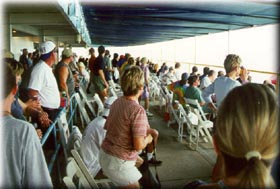
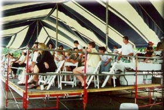

|
The Judges Stand is located at the Start / Finish line, with a really great view of the racing action. Judges Stand seating is divided into two areas, the Veranda and the Skybox. The Veranda is a covered patio in front of Judges Stand, and the Skybox is a tent directly next to the building.
  (Photos copyright 2000 Joe Dabliz) In the photo below, the yellow bouy in front of the Judges Stand is the official mark for the Start/Finish Line.

(Photo copyright Joe Pfeiffer) The 'gun' used to start the race is right on top of the Judges Stand, and is more of a small cannon (it can make quite a boom). Most of us love the excitement of it, but if you're sensitive about such things, you may wish to consider another viewing area.

(Photo copyright Rose & Laura Pfeiffer) This last photo was taken with a typical handheld camera, no special zoom. It shows how close to the action this spot is.
All contents Copyright © 1997-2000 Spirit of Detroit THUNDERFEST, except where noted.
Web page created by Brian Reed.
|